Codes
If you've got a website, you can add these codes down below!
Please remember not to hotlink! Instead, download the image and upload it to your own server.
If you would like to donate your own codes, feel free to email me!
50x50
 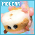
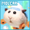
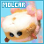
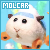


75x50
 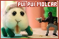
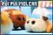
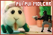
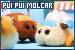
 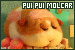
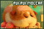
100x50
 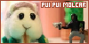
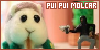